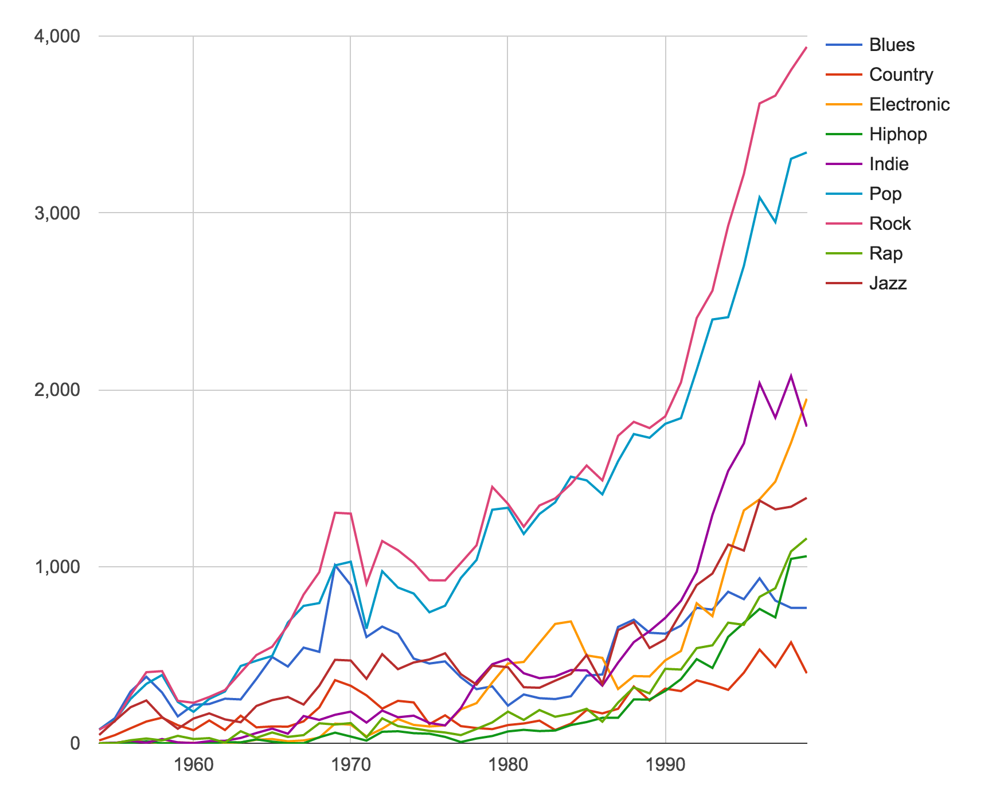
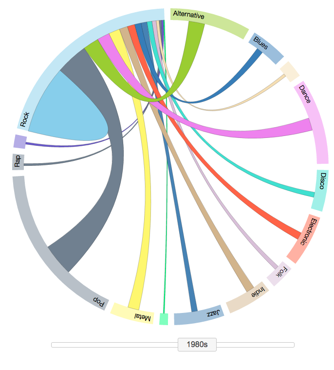
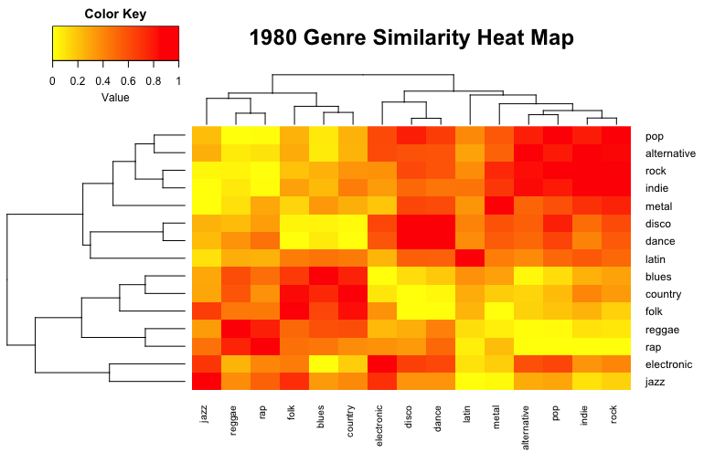

In this guided narrative, we tell a story about the evolution of music genres over the decades. We use a series of interactive visualizations to illustrate how various genres emerged and coexisted over time. Specifically, we ask the following questions:
Before we begin, we will introduce the concept of fusion music genres, which are are fusions of various historical genres. People have been experimenting with combining instruments for centuries - or even millennia. Some combinations of instruments that we are familiar with today evolved over hundreds of years. Others were the result of necessity, or an accident, or a crazy idea at the spur of the moment.
In our exploration, we will be looking at how these fusion genres have evolved over time. This is important because understanding different fusion genres is complex when you have so many different types of music. Our visualizations could be used to study the history of music and identify which fusion genres were really successful. They could also tell us which genres were compatible in the past, providing musicians with valuable insights to bring back lost fusion genres.
We use the Million Song Dataset from Columbia University's LAB ROSA. It contains a collection of audio features and metadata for a million contemporary popular music tracks. For more details on the dataset, see data quality.
After processing the data, we obtain a table for each decade showing the number of shared (cross-tagged) songs between genres. Here is the shared songs table for the 1990s. It says that, for example, there were 800 songs that were tagged as both Alternative and Blues.
| Genre | Alternative | Blues | Country | Dance | Disco | Electronic | Folk | Indie | Jazz | Latin | Metal | Pop | Rap | Reggae | Rock | |
|---|---|---|---|---|---|---|---|---|---|---|---|---|---|---|---|---|
| 0 | alternative | 11821 | 800 | 547 | 1955 | 452 | 2337 | 1463 | 5178 | 1291 | 255 | 2220 | 6092 | 1014 | 268 | 9967 |
| 1 | blues | 800 | 6194 | 472 | 615 | 175 | 251 | 566 | 491 | 1472 | 62 | 299 | 1640 | 375 | 67 | 2737 |
| 2 | country | 547 | 472 | 4315 | 354 | 62 | 97 | 838 | 449 | 196 | 41 | 87 | 996 | 82 | 24 | 1595 |
| 3 | dance | 1955 | 615 | 354 | 8229 | 1140 | 3430 | 463 | 1039 | 1595 | 397 | 581 | 4152 | 848 | 601 | 3463 |
| 4 | disco | 452 | 175 | 62 | 1140 | 2030 | 762 | 126 | 285 | 486 | 85 | 155 | 1221 | 189 | 45 | 916 |
| 5 | electronic | 2337 | 251 | 97 | 3430 | 762 | 8741 | 426 | 1290 | 2116 | 175 | 764 | 3144 | 560 | 178 | 3229 |
| 6 | folk | 1463 | 566 | 838 | 463 | 126 | 426 | 4927 | 1172 | 565 | 194 | 601 | 1796 | 177 | 70 | 2729 |
| 7 | indie | 5178 | 491 | 449 | 1039 | 285 | 1290 | 1172 | 7884 | 706 | 102 | 735 | 4611 | 528 | 138 | 6347 |
| 8 | jazz | 1291 | 1472 | 196 | 1595 | 486 | 2116 | 565 | 706 | 10519 | 443 | 471 | 2244 | 783 | 166 | 2494 |
| 9 | latin | 255 | 62 | 41 | 397 | 85 | 175 | 194 | 102 | 443 | 2038 | 108 | 827 | 120 | 105 | 829 |
| 10 | metal | 2220 | 299 | 87 | 581 | 155 | 764 | 601 | 735 | 471 | 108 | 9941 | 1304 | 602 | 92 | 5451 |
| 11 | pop | 6092 | 1640 | 996 | 4152 | 1221 | 3144 | 1796 | 4611 | 2244 | 827 | 1304 | 18551 | 1220 | 411 | 11167 |
| 12 | rap | 1014 | 375 | 82 | 848 | 189 | 560 | 177 | 528 | 783 | 120 | 602 | 1220 | 4283 | 214 | 1502 |
| 13 | reggae | 268 | 67 | 24 | 601 | 45 | 178 | 70 | 138 | 166 | 105 | 92 | 411 | 214 | 2196 | 888 |
| 14 | rock | 9967 | 2737 | 1595 | 3463 | 916 | 3229 | 2729 | 6347 | 2494 | 829 | 5451 | 11167 | 1502 | 888 | 31295 |
Number of Popular Songs vs. Year Per Genre
From 1950s to 1980s, most of the genres had a similar gradual rise. An exception is Blues, which declined in the 80s. Electronic music started becoming very popular in the 80s.
1990s (and subsequently 2000s) saw a huge increase in popularity for most of the genres, especially, rock, pop, electronic and indie. This is the decade when music sharing became popular (rise of MP3 and digital downloads) and independent labels grew.
Using this interactive chord diagram, we can examine the similarities between the fusion genres over the decades. The thickness of each chord (connection between two genres) is proportional to the number of shared songs between the genres, conveying the similarity of those genres.
1950s – The Years of Rock n Roll
1960s – Experimentation & New Genres
1970s – Embracing New Genres
1980s – Decline of Old Genres
1990s – Rise of Indie Artists
2000s – Music Sharing Becomes Popular
Similarly, we can use heatmaps to gauge the similarity between genres. However, instead of using the number of shared songs as a proxy for similarity, we will now use correlation between four acoustic features (average timbre, tempo, loudness, duration) to measure similarity between genres over the six decades. Red squares indicate high correlation in acoustics, conveying similarity between the genres.
When we compare the heatmap and chord diagram for a single decade, we can gain some valuable insights. For example, consider the two visualizations for the 1980s.
 From the chord diagram, we see that rock is most compatible with pop, dance, metal, and indie (wide chords between genres). Similarly, the heatmap tells us that rock is most compatible with indie, pop, metal, and alternative (dark red values). These findings from the heatmap correlates with those from the chord diagram. This supports the hypothesis that these genres are not only most compatible in terms of the number of shared songs, but also in their acoustics.
There are however, some contradictory findings as well. From the heatmap, we can see that rock is least similar in terms of acoustics to reggae, folk, jazz, rap, and blues. However, the chord diagram does not indicate low compatibility with some of these genres. For example, folk has high proportion of shared songs with rock. These contradictions might arise due to several reasons:
Some of our key takeaways from this analysis are:
For further investigation of this data, we would like to add acoustic similarity in the chord diagram instead of using a separate heatmap by changing the transparency of chord color based on acoustic similarity.